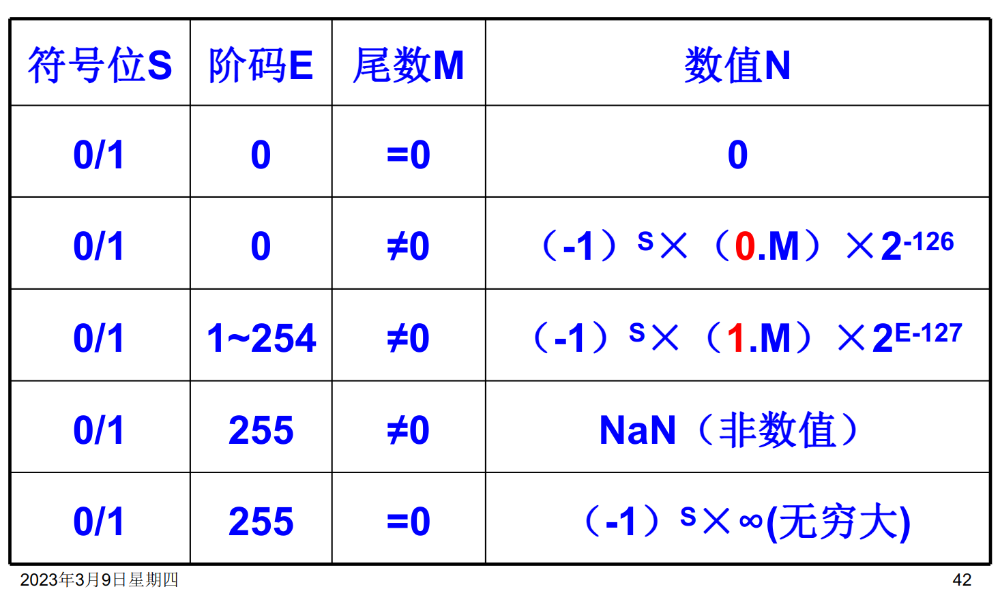
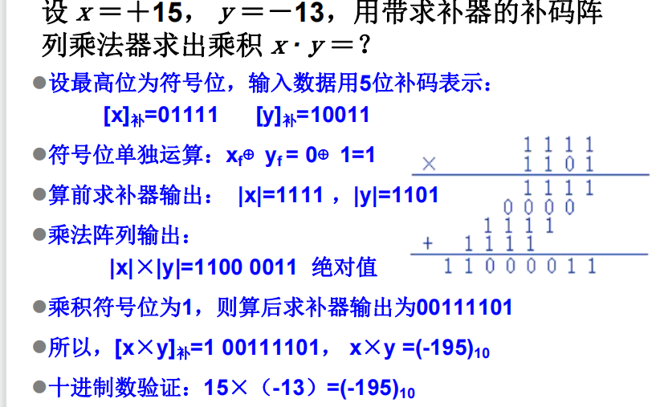
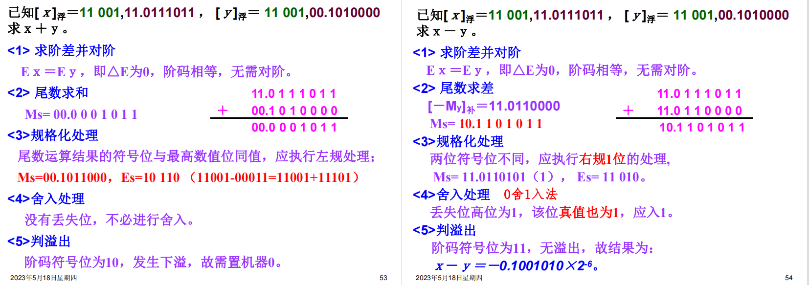

运算方法和运算器
数据的类型
在日常生活中通常使用十进制，但是十进制在计算机中实现非常的困难。
二进制在计算机系统中占用的存储空间小，在硬件上易于实现，易于计算。
十六进制便于用来表示二进制数，因为一位十六进制数恰好就是4位二进制数。
定点数：小数点位置固定的数，数据表示的范围比较小。
浮点数：小数点位置不固定，数据表示的范围很大。
无符号数：所有位均表示数值，直接用二进制数表示。
有符号数：有正负之分，一般最高位表示符号位，剩下的位数是符号位。
定点数
小数点固定在某一位置的数据。
通过约定小数点在某一个固定的位置，小数点之前为2的正次幂，小数点之后为2的负次幂。
小数点的位置是事先约定的，实际上不用保存小数点的信息。
数的机器码表示
-
原码表示法
第一位是符号位，余下的位数才表示数值。
在这种表示法中，0存在着两种表示方法，
+0和-0。这种表示方法非常的简单，但是才参与运算非常的复杂。
-
补码表示法
在计算机中的运算都有最大的范围，从数学上来说就是含有模运算。
从二进制的角度上来说，补码一般就是数值部分的反码加1。
补码不影响加减运算，也就是补码的加减等于加减的补码。
0具有唯一的表示。
最小值的补码和原值一样，补码的补码是原码。
求相反数的补码：对原数的补码每位求反再加1，注意这里需要对符号位也取反。
-
移码表示法
通常用在表示浮点数的阶码，用定点整数形式的移码，把真值平移个单位。
同补码直接只有符号位取反的区别。
浮点数
小数点的位置可以变化，如同科学计数法中的数据表示。
M称做尾数，为一个纯小数，表示数据的全部有效数位，决定着数值的精度R称做基数，可以取2，4，8，16，表示当前的数制。在计算机中一般默认取2e称做阶码，为一个整数，表示小数点在数中的位置，决定着数据的大小
浮点数的规格化
当尾数使用原码表示的时候：
- 尾数数值最高位一定是1
- 尾数形如0xxxxx(正)或者1xxxxxxx(负)
- 这样做能让表达的精度更高
当尾数使用补码表示的时候：
- 尾数的最高数值位和尾数符号位符号相反
- 尾数就会形如01xxxxxx（正）或者10xxxxxx（负）
浮点数的表示范围

浮点数存在上溢出和下溢出两种情况。
上溢出：阶码大于所能表示的最大值，表示无穷
下溢出：阶码小于所能表示的最小值，表示0
当尾数为0或者阶码小于所能表示的最小值时均表示0
浮点数的最值
阶码采用移码，表示范围是：
尾数采用补码，表示范围是：
在实际做题中，不同的题目不同字段的含义可能不同。
IEEE754 浮点数
该标准规定了32位浮点数和64位浮点数。
32位浮点数

- 符号位表示浮点数的符号。0表示正数，1表示负数
- 尾数：23位。原码纯小数表示，小数点在尾数的最前面。由于规格化的要求，最高位应该始终为1，因此标准中隐藏了这个值，实际值应为
1.M - 阶码：8位，采用有偏移值和移码表示，移动的位数是127。
64位浮点数
- 符号位的规定和32位时的情况是一致的。
- 尾数：52位。
- 阶码：11位，移动的位数为1023。
特殊数据的表示

十进制数串的表示方法
采用字符串的形式来表示：
- 每个十进制数位使用一个字节来表示
- 需要注明串的起止位置和长度
采用8421BCD码表示。
字符和字符串的表示方法
字符一般采用ASCII码的方式表示。
字符串就是一串连续的字符，每个字节存储一个字符。
数据传输中的校验
为了避免在删除传输的过程中发生错误，在数据的编码上添加检错和纠正的能力。
数据校验的基本原理是扩大码距。
奇偶校验码
在数据中增加一位冗余位，将码距从1增加到2。
如果编码中发生了奇数个错误，就可以被发现。
奇偶校验有着两种类型：
- 奇校验：每个字中包含1的数目是奇数
- 偶校验：每个字中包含1的个数是偶数
在发送方发送数据之前，按照提前约定的校验类型在数据后添加校验位。接收方接受数据之后按照于约定的校验方式进行校验。
定点加法减法运算
补码加法
加法的补码就是补码的加法。
补码的减法
相反数的补码就是补码的相反数。
定点数的乘除法
串行乘法


如图，乘数是0.1011，那么总共四轮，从低位往高位看。初始我们取部分积为0
乘数最低位是1，所以第一轮，部分积=0+A。然后将部分积右移一位
第二轮，同上
第三轮，乘数的对应位是0，所以部分积不变，只有右移一位的操作。第四轮同第一轮，结束
并行乘法


逃课：不去管上面两个图讲的原理是怎么用电路实现的。反正我们考试写过程应该就可以写最后一图，也就是我们普通的计算多位数乘法时的方式。速通.jpg
若为带求补器的（即可以乘负数的），那么算前取绝对值，然后上述乘。符号位单独运算，算后再根据符号来变成补码
并行除法
加减交替法
应该不考.jpg
浮点数的运算
加法
1.检查0操作数
如有，那不用算了。
2. 对阶
将阶码较小的操作数的阶码放大，同时它的尾数右移对应的位数
3.尾数相加
如题，用双符号位的尾数加起来即可
4. 尾数的规格化
- 首先，如果双符号位出现了10或01这种非法值，那么右规直到合法，同时阶码增加对应的值
- 然后，检查是否符合规格化小数的要求，比如00.001001，小数点两边相同，那么就左规直到不同（即00.100100），阶码对应。（就是正数的前缀0和负数的前缀1其实在浮点数里都没有表示实际的意义，可以直接移位消掉）
5. 尾数的舍入
- 尾数最后一位恒置为1
- 或者看一下前面操作过程中（可能的）右移出去的内容，0舍1入——此时可能再次导致尾数溢出从而右规，比如00.1111，舍入+1
6. 阶码的溢出检查
若阶码下溢，置0返回
若阶码上溢，报告异常
结束
减法
即加上减数的补码，略
乘法
阶码相加，尾数用定点数的相乘
除法
阶码相减，尾数用定点数的相除